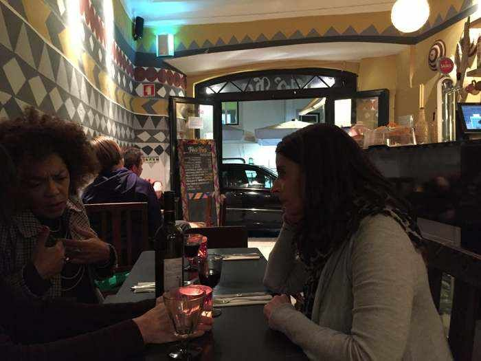
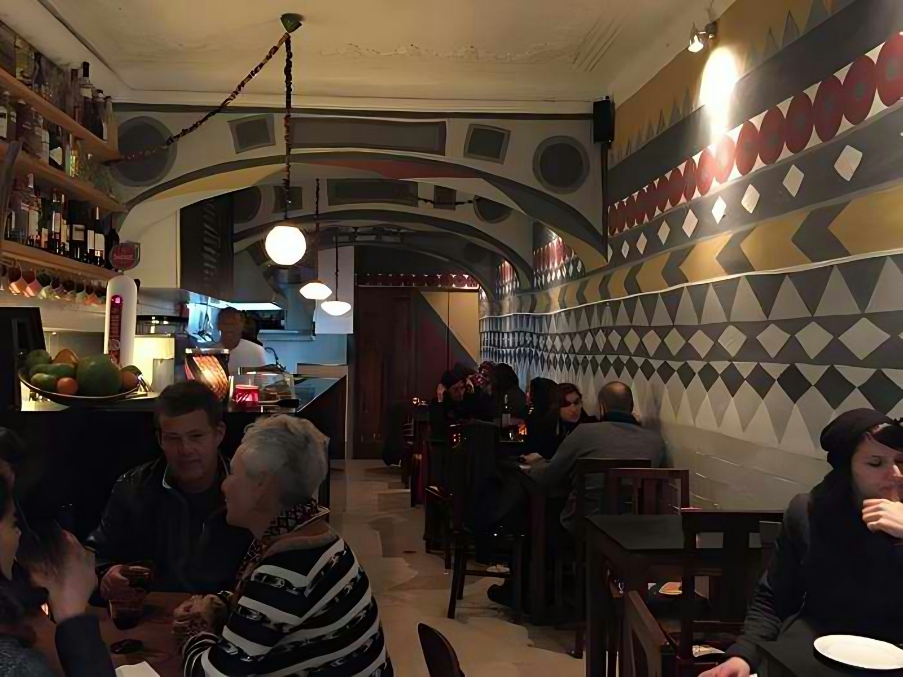
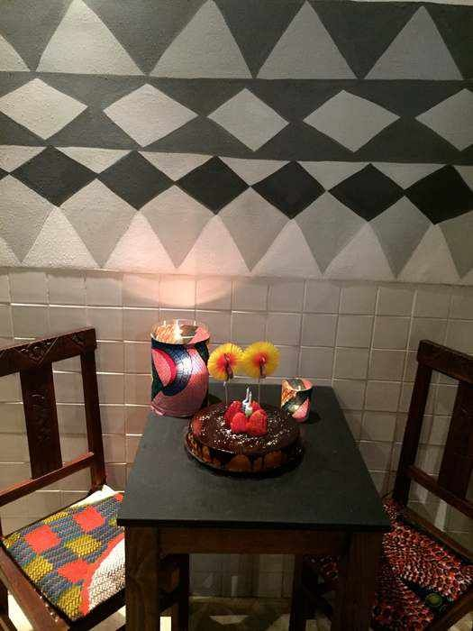

[ 07 / 14 ] · Tasca Africana · Lisboa
Afro Taska

Conceito completo e montagem de restaurante para uma tasca africana — murais geométricos, tecido wax e cozinha de raiz africana.


[ 07 / 14 ] · Tasca Africana · Lisboa

Conceito completo e montagem de restaurante para uma tasca africana — murais geométricos, tecido wax e cozinha de raiz africana.

